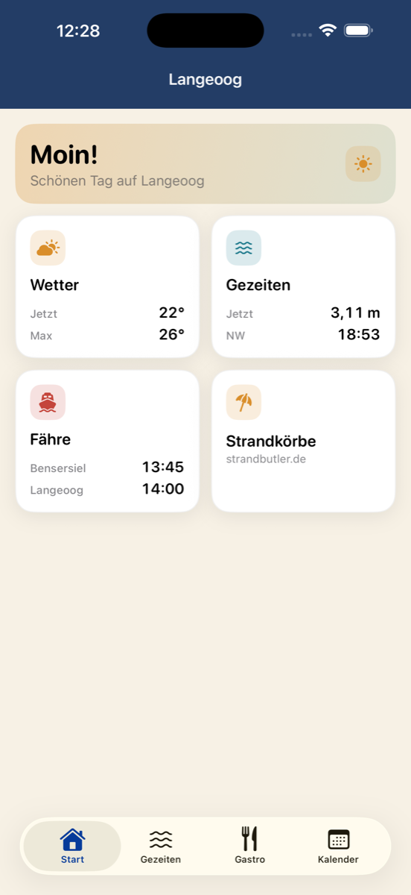
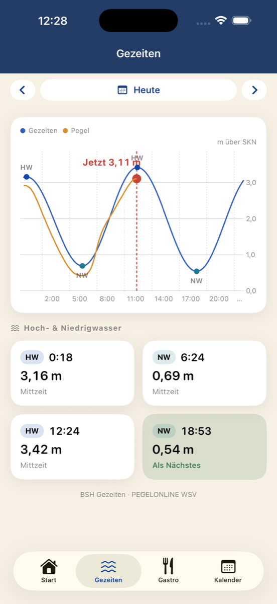
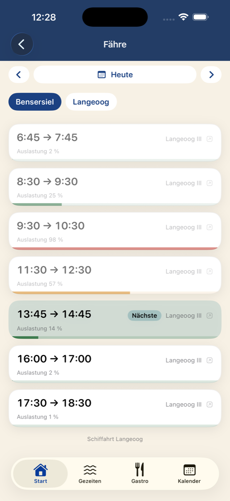

Island guide for Langeoog: ferry times, tides, weather, events and air quality — on one screen. German UI.



loog puts everything you check on a Langeoog day into one native app: when the ferry leaves, when the water comes back, what the weather is doing, and what is on. All times are island time (Europe/Berlin), whatever your phone is set to.
Today is always free. loog+ unlocks other days — plan ahead or look back — as a one-time purchase (€4.99) or a monthly subscription (€0.99).
In TestFlight beta. Source on GitHub. Data comes from public sources (api.langeoog.de, BSH, PegelOnline, Bright Sky, UBA, veranstaltung.langeoog.de).